Everything here rests on one thing. Somebody has to be willing to hand this product the conversation they would only show a close friend.
That was the design problem on my first day, and it is still the design problem now. Every decision below comes back to it.
What it actually is
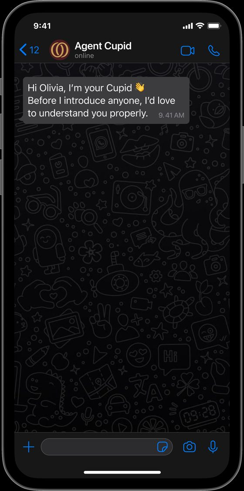
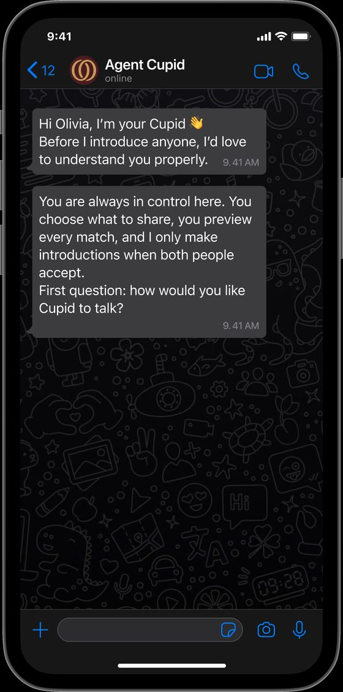
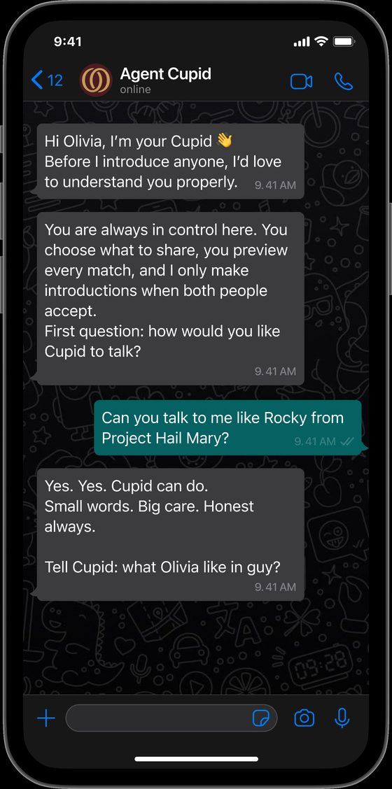
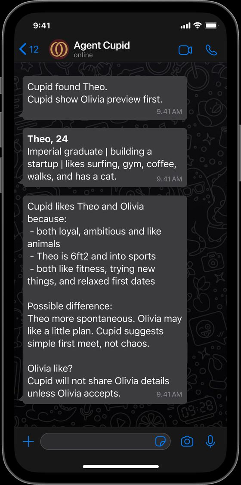
There is no app to download and no profile to fill in. You talk to Soul the way you talk to a friend, and it learns you from that.
What I did on it
I am the only designer here. I work with the CEO on what the product is and how it should feel, and I own the front end on my own, from the positioning through to the conversion number at the end of it.
That means I do not hand over a Figma file and wait. I decide the positioning, design the thing that carries it, build it with engineering, watch what real people do with it, and change it.
The problem I was actually solving
Bumble's founder announced that AI would take over the swiping. The post is deleted now. The comment section under it was the most useful research I did here.

People will hand AI their calendar and their inbox. Romance is the place where they most want the other person to be real. That gap is where the whole design problem lives.
Our own users said the same thing about the old site, in their own words.
The rest of the evidence
Reading the comment properly
The objection is specific. She does not say the technology fails. She says it was forced on her, and that it sterilises the one thing she came for.
So the split holds up at scale. Women rarely object to the technology in principle. They are quicker to read it as a risk placed on them, and in dating, where the stakes are personal safety, that gap gets wider. My read was two-sided. There is a real opportunity for AI here, and the same evidence is a warning about how to enter. The job is to leave people room to feel in charge, so the AI never reads as something being done to them.
How people arrive
Then I watched how people arrive. Women join a dating app because it makes them feel good. Men join because women are already there.
The order matters, and most products have it backwards. Pull in a lot of men and you get volume with no retention. 1Soul is for serious connection, so we build for women first. The men come on their own after that.
So I set the positioning before anything was drawn. 1Soul is built for the university woman who wants something serious, and the product has to prove that in the first interaction. She is a student, so she lives inside a small world of shared campuses and mutual friends, and she has more to lose socially if an introduction goes wrong. That shaped everything after it.
The market I was designing into
I looked at the dating apps people already use.
Most run at six or seven men to three or four women, and that gap shapes everything else. Men send a lot of messages and get nothing back. Women open the app buried in messages from strangers. It gets worse for both sides, and the ratio keeps getting worse with it.
The three patterns I pulled out of the comments
- The strongest backlash was to any language implying AI replaces or handles the relationship itself. The "AI dates AI, then you meet" framing was rejected even by people who liked the underlying idea.
- The second-strongest concern was privacy and deepfakes. Users asked directly how their photos would be protected, a trust gap the competitor's own page never addressed.
- One notably positive comment confirmed the mechanic was welcome: AI narrowing the field before a human commits time. The problem was the wording.
The same Pew survey found 68% of women say AI is moving too quickly, against 58% of men. A separate study of around 3,000 people in the US and Canada found women rate AI as riskier, and traced it to higher general risk aversion and greater exposure to the jobs AI disrupts first.
User interviews
Four in-depth interviews with the target audience, London university students, current and lapsed app users. Eight more online with heavy users of social and dating apps. AI clustered the transcripts by problem type, which surfaced eight areas. The top four:
- Brand tone: the site read as "dark" and "mysterious," more like a spellbook than a dating product, undercutting the fact that it's built for serious daters
- Unclear audience: is this for students only, or everyone? The "Connecting students at…" module was described as confusing
- Trust & safety, especially for women: one participant was uneasy that a match arrived with a name but no photo or shared context, and said she would never accept an AI-scheduled meeting without a conversation first
- AI credibility: participants were curious what Cupid actually does (chat with you? pick the venue?) but the product didn't say
What I wrote because of it
This went straight into the words on the page. Three lines, written to take the edge off a woman's guard about AI coming into her love life.
Be seriously matched, not just casually seen.
Cupid helps match; you decide to love.
Cupid works all that in the background, you stay in the foreground to love.
Each one puts Cupid behind the person. It finds and it narrows, and the person is still the one doing the loving. That is the line I did not want the product to cross in its own copy.
Three stages, and they only work in order
This was never one leap from zero to one. The product has to do three things, in order, and each one asks the person for something bigger than the last. So each one is its own design problem.
I can read you
Giving this thing my real conversations is safe
I can find the right person for you
This AI's judgement is worth listening to
I can get you into the same room
Meeting a stranger in person is safe
We tried to run straight from stage one to stage three. That is the mistake the rest of this page is about.
The line is the whole 0 to 1, not the three stages. Stage one is most of the distance, and it is the part that gets skipped.
The first change: nobody believed us, and women believed us least
At the early events the split ran nine men to every woman. The sign-ups existed and the room stayed empty, and the site was the reason. Research called it a heavy magic book. It promised that an AI would date on your behalf, which is the one claim a woman deciding whether to walk into a room of strangers will not take on trust.

So I rebuilt the site around one audience, the university woman in London who wants something serious, and I designed the mechanic to match. I took the shape from Secret Santa. You know your match is in the room, you get one small hint, and you decide when to open it.

It worked. Female sign-ups went up 25%, users more than tripled, and at one event the women outnumbered the men for the first time. The room stopped being nine to one.
I rebuilt the palette too, off the near-black and gold research had called a spellbook.
The colour system
The rebuilt colour system: sage, blush, plum and wine in place of the old mysterious near-black and gold, directly answering the "spellbook," "untrustworthy" and "too heavy" feedback from research.
How the mechanic works, step by step
Why Secret Santa was the right shape
You are in a room with people you already trust. The setting does the reassuring before anything is opened.
Your name is already on something. That certainty is what lets you enjoy the waiting.
One small hint, and you choose when to open it. Nobody opens it for you.
A dating app hands over the whole profile at once: the photo, the name, the hobbies. Then it asks a woman to judge a stranger off that card, and to go and meet him in person. She gets all of the surface immediately, and none of the depth. Secret Santa suggested another way in. Set it somewhere she already feels safe. Give her a little. Let her stay curious, and let her work out for herself which one is her Santa. The decision stays hers.
Research backed it. Women hold back from putting their own information out, photos most of all, and they will not let an AI date on their behalf. Being handed a finished answer feels like being managed. They want more real information about the other person, then the choice. Men are far more relaxed about showing themselves. The same feature lands in two different places, and the design has to hold both.
Slowing the first interaction down only works because of what 1Soul is for. Someone who wants something serious will wait for one good introduction. Someone who wants to swipe goes elsewhere, and that is fine.
How it runs: online first, then a room
Everyone starts in the same place. A man or a woman talks to Cupid, Cupid works out who suits them, and both sides get a match. If they want to take it further, we place them at a real event, something like a matcha party. Everyone in the room is a London university student, so the setting already carries trust a stranger meeting never would.
The room runs like Secret Santa. Everyone knows their match is there and nobody is handed a name. The woman gets the richer clue. She knows more about him than he knows about her, and she is the one who can move first. So she can watch the room, start the conversation when she is ready, or not at all. He cannot open a queue and he cannot skip ahead of her.
Deciding what got built first
I wrote the feature list and I ordered it. This covers the people who sign up online and want to come to the group events offline. Not everything could ship, so I ranked each feature against one question: does this make the first interaction feel safe for her?
- Clue first. Highest priority. It is the mechanic, so nothing else mattered until it worked.
- One match at a time. High. A queue would have undone the whole positioning, so we never built one.
- She sets the pace. High. She replies in her own time, because urgency is what makes these products feel unsafe.
- Profile depth for men. Lower. Men were not the constraint. Adding more for them first would have cost us the thing we were solving.
I ran the growth work alongside it.
Growth and content
Content planning for social
I wrote the video concepts and decided what each had to do. Some showed the mechanic, because "you get a clue first" needs showing. I also set what we would never post: nothing resembling a swipe queue, and nothing that promised a match.
The biggest rule came from watching the Bumble post fail. We kept the talk about AI to a minimum. Leading with the technology is what set people off there, so our posts lead with the people and the evening and let Cupid stay in the background.
The rest of the role
I worked on early growth as well. I ran an on-the-ground content strategy, which meant street interviews at London universities, timed so the filming and the sign-ups happened on the same day. I also wrote the playbooks for Instagram and TikTok, so each platform had its own plan.
The second change: we had moved too fast, so we went backwards
Clarity said the funnel was healthy. Conversion was normal and users were growing, slowly and steadily. On paper there was no reason to stop.
The events told a different story. People were signing up and never turning into a room, and the reason had nothing to do with the funnel. The base was too small, and we had been too impatient with it. We had built the introduction before we had built the understanding, and you cannot introduce people you do not know yet.
Know people
Match them
Get them in a room
I made the case for going back to stage one and building it properly. The team agreed, and the goal changed from more people to more depth per person. Everything after this point is the team’s work, not mine alone.
Three versions in one year
Each version changed because of something we had got wrong, and you can read the reason off the three homepages.
An AI that dates on your behalf.
- Dark and gold. Research called it a spellbook.
- Nine men to every woman in the room.
Changed because nobody believed it, women least of all.
- It gets to know you, then introduces somebody.
- Female sign-ups up 25%. Users tripled.
Changed again because the base was too small to match anyone well.
- It gets to know you, and keeps going.
- A conversation you upload, a letter you get back.
The third one asks for something much bigger and gives something much bigger back. You hand over a real conversation, Soul reads all of it, and it writes you back.
So the visual language moved with it. The game is gone and a nineteenth-century letter took its place. Paper, a wax-dark envelope, a report you open. That reference is doing work. It points at the last time people got to know each other slowly, by writing, and it lets something invasive arrive as something intimate.
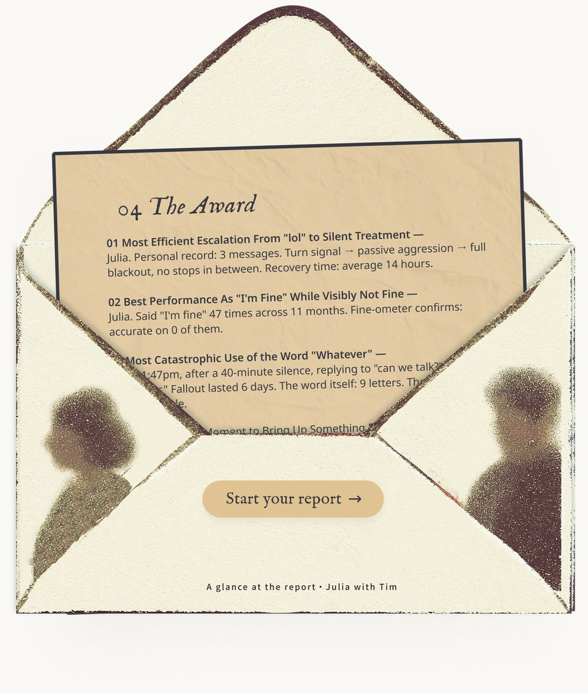
I never ask anybody for their data. I ask whether they want to know what Soul thinks of their ex. The conversation arrives because somebody is curious, and the depth we needed arrives with it.
The report comes back as a link. That means it can be opened on a walk home, read at two in the morning, or sent straight into a group chat, and it means the thing we made travels on its own.
What changed in the product, in detail
Feature by feature
- The way in. The old product asked you to describe yourself before it could do anything. The new one asks you to upload a conversation you already have, so the first step costs you nothing to produce.
- What it returns. The old product returned a match. The new one returns a written report about you and one other person, and the match comes later, once it has read enough to have a view.
- How long it keeps you. The old product was a moment. The new one keeps going, because you can text it like a friend and it remembers the last chat and the last fight.
- Where it lives. Both live in WhatsApp. That stayed, because it is the reason there is nothing to download and no habit to build.
- What it looks like. Sage and blush gave way to paper, ink and a wax-dark envelope, so a product that reads your messages arrives as a letter.
The page as it stands
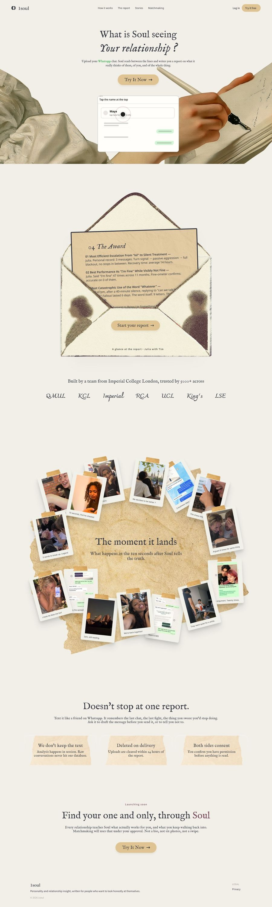
So I built the section of the site that shows exactly that. Real photographs of the ten seconds after somebody reads theirs.
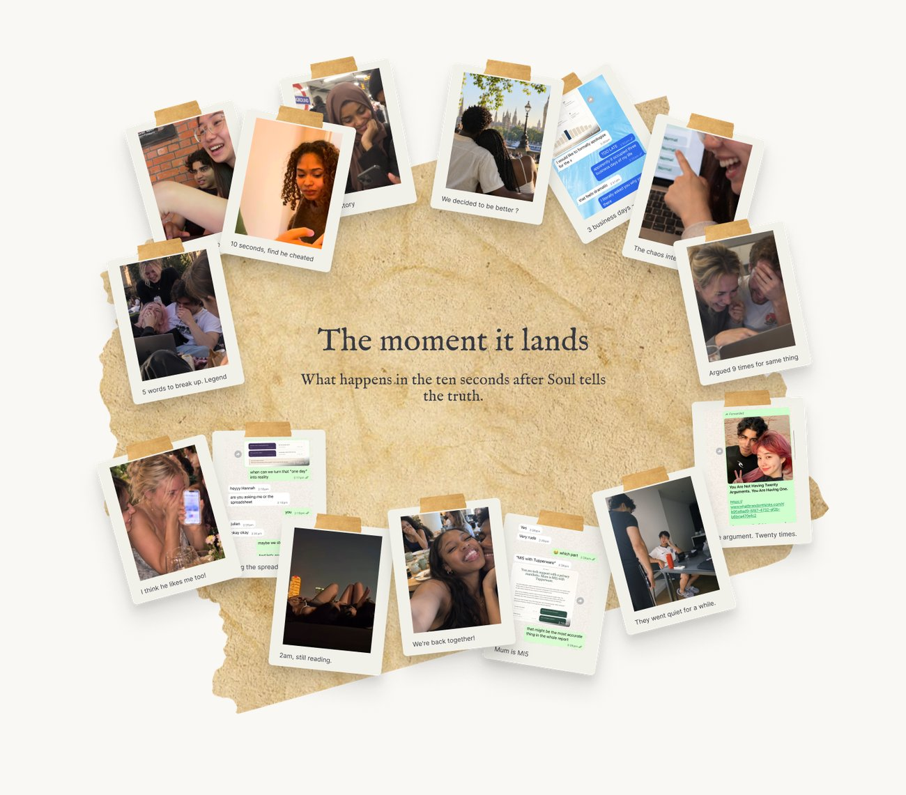
The site was too well written to work
Clarity showed people skipping the copy. They read a heading, travelled straight through the writing under it, and slowed down again on the photographs.
That was uncomfortable, because the writing was the part I had worked hardest on. This is a product about real relationships, and one photograph proves that better than a paragraph explaining it does. So I cut the copy back and built a wall of real Polaroids in its place. Actual people, actual moments, nothing bought in.
Clarity heatmap
to be added
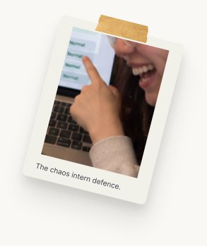
The page stopped telling people it was real and started showing them.
Trust, as things you can point at
- Matches arrive one at a timeA queue is the thing that made her feel like stock on a shelf.
- She gets a clue, and the profile stays closedEnough to be curious with, and it leaves the rest for her to find.
- She replies in her own timeUrgency is what makes these products feel unsafe.
- "You decide what you do, always", written into the onboardingA product that will not say it in words does not mean it.
-
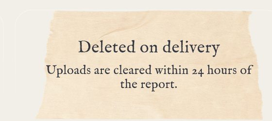
Raw uploads deleted within 24 hours, stated on the pageThe promise is worth as much as the sentence that carries it. -
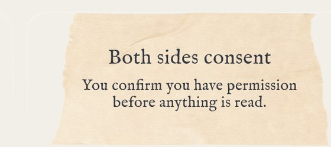
Both sides consent before anything is readSomebody else is in that conversation too.
The privacy model in full
What we keep, and for how long
Analysis happens in session. The raw conversation never reaches our database, and the upload is cleared within 24 hours of the report going out. What survives is the report and what Soul learned about you, which is the part you asked for.
Deletion
Deletion is the default. Nobody has to go and find a setting. The 24-hour window exists so a failed report can be regenerated without asking somebody to upload their conversation twice.
Consent
Somebody else is in every conversation that gets uploaded, and they are not the one who pressed the button. So the flow asks the uploader to confirm they have permission before anything is read, and the site says so on the page itself.
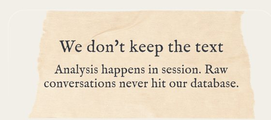
How I work, in one paragraph
I run and write up the interviews myself. The clustering, the cross-checking and the building run through AI, and the judgement stays with me.
Who did what, on this project
The closer the work sat to a person, the more of it I did by hand.
- By hand. Four in-depth interviews with London students, plus eight online with heavy app users. Run and written up myself.
- AI extracted. Transcripts clustered by problem type. Eight areas, with brand tone and trust for women at the top.
- AI cross-checked. Claude, ChatGPT and Gemini on the same material in parallel, so a gap between them showed what one had missed.
- AI attacked. I had it read the site as a sceptical first-time visitor. It found what the interviews had, which is how I knew the finding held.
- My judgement. The mechanic. She gets a clue first, and the decision stays hers. That came from sitting with one participant's discomfort.
- AI built. Positioning into copy, copy into Figma, Figma into shipped code.
- Measured. Female sign-ups up 25%, users more than tripled.
The full loop
Stage by stage
- Claude, ChatGPT and Gemini, in parallel. The raw interview material through all three at once, cross-checking their reads, so anything a single model missed shows up as a gap between them.
- Claude. Research synthesis. Transcripts into a prioritised framework in hours, then positioning and copy grounded in that evidence.
- Claude to Figma. An approved direction into an editable file, so spacing, hierarchy and imagery stay reviewable before anything is built.
- Claude Code. The real thing. The front end shown on this page was built in code, well past the mockup stage.
- GitHub and Vercel. Every round is a reviewable change, and a design decision can ship the same day.
- AI again, after launch. Re-checking copy, flows and edge cases against how real users respond, which feeds the next research round.
The AI moved fast on everything downstream of a decision. It never made the decision.
What came of it
Stage two had one job: get the women who signed up to walk into the room. That one worked.
Stage one has a harder one. Get somebody to hand over the conversation they would only show a close friend. Over 5,000 people have used it so far, and the base we were missing is finally being built.
- Backed by EWOR
- 5,000+ people
- +25% female sign-ups
- 3× users
- One event where the women outnumbered the men
That number is the whole measure of the trust work. Every one of them read what the product was asking for, decided it was safe, and went and found the export button in WhatsApp.
The second proof arrived on its own. People started sending their reports on, to a friend, into a group chat, to the person the report was about. Somebody who shares theirs has trusted it twice, and the second time is much harder to earn than the first.
That is a result in its own right. Sharing brings in people who arrive already warm, and it means growth that costs nobody a day of work. The product started recruiting for us.
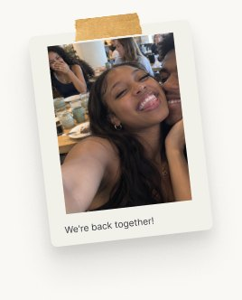
Stage one is where I am now, building the part that has to be right before any of the rest of it works.
Want to try 1Soul?
Sign up here ↗